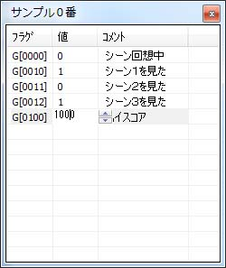

Flag.ini
Flag.ini デバッグ中、よく使うフラグを登録しておくと、 ゲーム実行中にフラグの変化をリアルタイムで見ることができます。 また、ゲームを実行しながら、フラグの値を書き換えることもできます。 フラグは２０個のグループに分けて登録できます。 例：グループ０は好感度、グループ１は分岐に関わる重要なフラグ、…。 使いこなすと、デバッグが非常に楽になります。上手く使って下さい。 Flag.ini を作成する作業フォルダ（設定していない場合は SiglusEngine.exe のあるフォルダ）に、 Flag.ini というテキストファイルを新規作成して下さい。 Flag.ini のサンプル#TITLE_FLAG00 = サンプル０番 G[0000] : 0 : シーン回想中 G[0010] : 0 : シーン１を見た G[0011] : 0 : シーン２を見た G[0012] : 0 : シーン３を見た G[0100] : 0 : ハイスコア #TITLE_FLAG01 = サンプル１番 F[0000] : 1 : Ｆフラグ L[0000] : 1 : Ｌフラグ S[0000] : 1 : Ｓフラグ F.bit[0000] : 1 : ビットフラグ グループのタイトル#TITLE_FLAG00 〜 #TITLE_FLAG19 まで設定できます。 例：好感度、分岐フラグ、…。 フラグの登録フラグ : グループ番号 : コメント
フラグの編集フラグの値の欄をダブルクリックして下さい。 小さなエディットボックスが現れ、値を編集することができます。 |